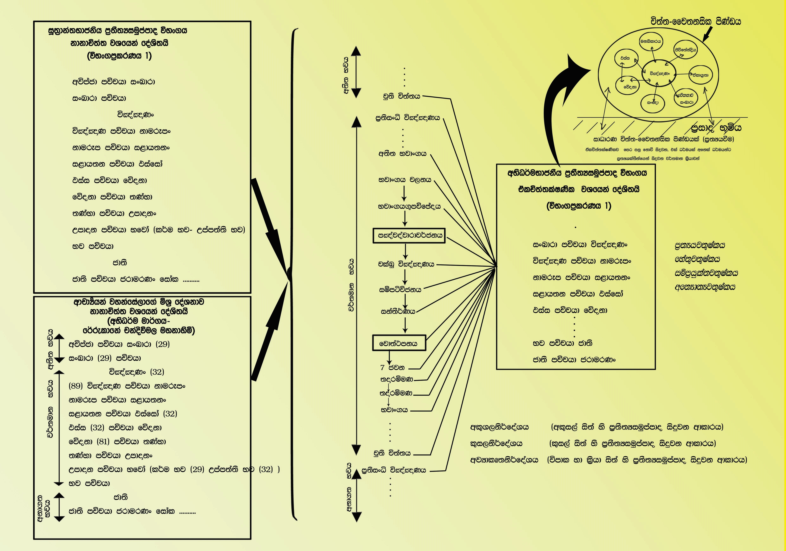

    <h3>ගරු අජන්තා සම්පත් ගුරුතුමා විසින් සකස් කරන ලද</h3>
    <h1>චිත්ත සහ චෛතසික චක්‍රය</h1>

    <div id="zoom-message" id="C1"></div>

    <div class="image-container">
        
    </div>

    <div class="container">
           
        <p></p>
        
        <p></p>
        
    </div>


    <script src="../scripts/wheelzoom.js" type="text/javascript"></script>

    <script>
        wheelzoom(document.querySelector('img.zoom'));
    </script>

<script>
    const isMobile = () => /Android|webOS|iPhone|iPad|iPod|BlackBerry|IEMobile|Opera Mini/i.test(navigator.userAgent);
    const content = document.querySelector('#zoom-message');

    if (isMobile() == false){
        content.innerHTML = '<center><h3>Double click on the chart and use the mouse to zoom and move.</h3></center>'
    }
</script>

</body>

</html>